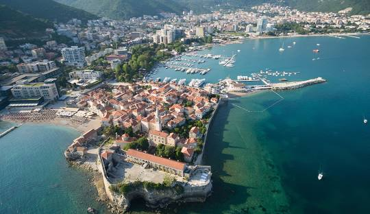
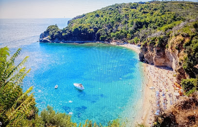
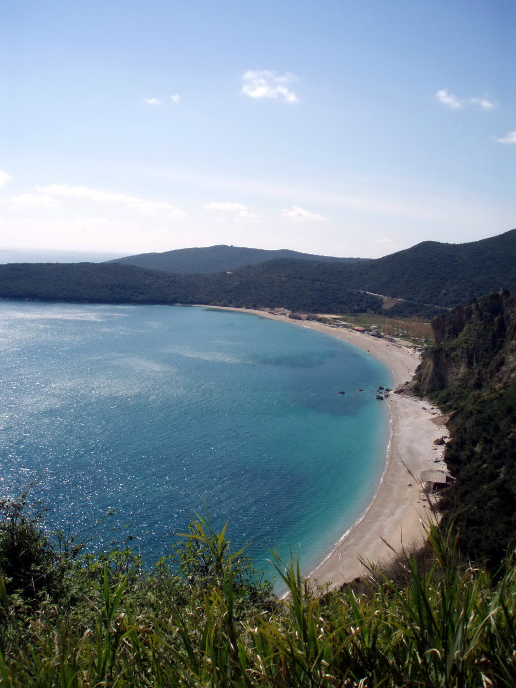
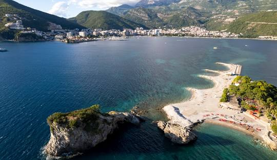

- 11:00Checkout Casa llac, sortida abans de les 11h com a molt tard.
- ~12:00Budva, volta pel centre i dinar. Per veure:
- Ciutat Vella de Budva
- Passeig marítim
- Església de Sant Joan
- Ciutadella
- Estàtua de la Ballarina
- Platja de Mogren
- TardaDesprés de dinar, tria una opció:
- CompraiDEA super, parada per fer la compra de camí a l'apartament.
- 15:00+Checkin Casa Costa (Prčanj), a partir de les 15h. Hi arribarem més tard, és clar.



